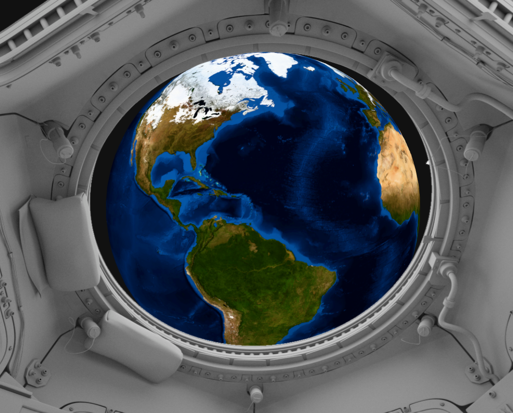
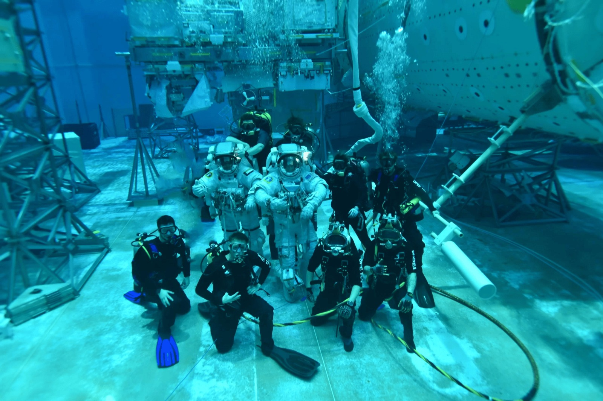

<!DOCTYPE html>
<html lang="en">
<head>
  <meta name="viewport" content="width=device-width, initial-scale=1.0">
  <title>BOTU</title>
<body>
  <link href="https://fonts.googleapis.com/css2?family=Jersey+20&display=swap" rel="stylesheet">
  <link href="https://fonts.googleapis.com/css2?family=Montserrat:ital,wght@0,100..900;1,100..900&display=swap" rel="stylesheet">
    
</body>
</html>
  <style>
    body {
      margin: 0;
      padding: 0;
      font-family: Arial, sans-serif;
      background: url('star.jpg') no-repeat center center fixed;
      background-size: cover;
      color: white;
      text-align: center;
      
    }


    /* Навигация */
    nav {
      display: flex;
      justify-content: center;
      align-items: center;
      gap: 20px;
      padding: 15px 30px;
      background: rgba(0, 0, 0, 0.8);
      border-radius: 30px;
      margin: 20px auto 10px auto;
      width: fit-content;
    }

    nav a {
      text-decoration: none;
      color: white;
      padding: 8px 15px;
      border-radius: 20px;
      transition: 0.3s;
    }

    nav a:hover {
      background: rgb(96, 104, 190);
    }

    .about-section {
      max-width: 900px;
      margin: 50px auto;
      padding: 20px;
      background: rgba(0, 0, 0, 0.5); /* затемнение под текст */
      border-radius: 15px;
    }

    .about-section h1 {
      font-size: 48px;
      margin-bottom: 30px;
    }

    .about-section p {
      font-size: 18px;
      line-height: 1.6;
      text-align: justify;
    }

  .cards {
    display: flex;
    justify-content: center; /* центрирует карточки по горизонтали */
    align-items: center ;     /* выравнивает карточки по вертикали (если нужно) */
    flex-wrap: wrap;         /* чтобы карточки переносились при маленьком экране */
    gap: 40px;               /* расстояние между карточками */
    margin-top: 50px;        /* отступ от меню сверху */

  }

  .card { 
  height: auto;
  width: 90%;  /* делаем меньше */
  max-width: 400px;
  border: 2px solid #ffffff;
  border-radius: 12px;
  overflow: hidden;
  box-shadow: 0 3px 15px rgba(0, 0, 0, 0.2);
  background: #000000;
  text-align: center;
  transition: transform 0.3s ease, box-shadow 0.3s ease;
  font-size: 14px; /* уменьшаем шрифт */
  }


  .card img {
  width: 100%;   /* картинка сама подгонится под ширину */
  height: auto;
  object-fit: cover;
  }

 .card-content {
  padding: 10px;
 }

 .card h3 {
  font-size: 16px; /* заголовок чуть меньше */
  margin: 8px 0;
 }

 .card p {
  font-size: 12px; /* текст меньше */
  color: #ffffff;
 }

 .card a {
  margin-top: 8px;
  padding: 6px 12px;
  font-size: 12px;
  border: none;
  border-radius: 8px;
  background: #000000;
  color: rgb(255, 255, 255);
  cursor: pointer;
  text-decoration: none;
  }
   .cards {
    display: flex;
    justify-content: center; /* центрирует карточки по горизонтали */
    align-items: center ;     /* выравнивает карточки по вертикали (если нужно) */
    flex-wrap: wrap;         /* чтобы карточки переносились при маленьком экране */
    gap: 40px;               /* расстояние между карточками */
    margin-top: 50px;        /* отступ от меню сверху */

  }

  .card2 { 
  height: 448px;
  width: 90%;  /* делаем меньше */
  max-width: 400px;
  border: 2px solid #ffffff;
  border-radius: 12px;
  overflow: hidden;
  box-shadow: 0 3px 15px rgba(0, 0, 0, 0.2);
  background: #000000;
  text-align: center;
  transition: transform 0.3s ease, box-shadow 0.3s ease;
  font-size: 14px; /* уменьшаем шрифт */
  }


  .card2 img {
  width: 100%;   /* картинка сама подгонится под ширину */
  height: auto;
  object-fit: cover;
  }

 .card2-content {
  padding: 10px;
 }

 .card2 h3 {
  font-size: 16px; /* заголовок чуть меньше */
  margin: 8px 0;
 }

 .card2 p {
  font-size: 12px; /* текст меньше */
  color: #ffffff;
 }

 .card2 a {
  margin-top: 8px;
  padding: 6px 12px;
  font-size: 12px;
  border: none;
  border-radius: 8px;
  background: #000000;
  color: rgb(255, 255, 255);
  cursor: pointer;
  text-decoration: none;
  }


    
    
  </style>
</head>
<body>
  
  <!-- Сначала меню -->
  <nav>
    <a href="about.html">About us</a>
    <a href="index.html">Main Menu</a>
    <a href="projects.html">Projects</a>
    
  </nav>

  <!-- Под меню заголовок -->
   <div class="cards">
     <div class="card">
       
            <div class="card-content">
               <h3>The ISS Dome (Window to the World)</h3>
               <p>The dome is not just a viewing window, but a unique instrument that is of value to the entire Earth.</p>
               <a href="kupol/index.html" class="btn">Try</a>
            </div>
     </div>

     <div class="card2">
       
            <div class="card-content">
               <h3>NBL NASA (Neutral Buoyancy Laboratory)</h3>
               <p>The laboratory is a huge pool where astronauts learn to work in conditions as close to zero gravity as possible.</p>
               <a href="Hakaton Winner 2025 2 nevesomost atym/index.html" class="btn">Try</a>
            </div>
     </div>
   </div>

</body>
</html>
